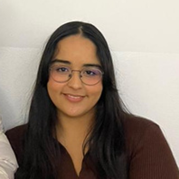

Projet académique · 4ᵉ année
Gestion de facturation
Application web réalisée en équipe pour gérer les factures et les clients, suivre les paiements et exporter les données en PDF et Excel.
Explorer mon GitHub ↗Étudiante ingénieure en 5ᵉ année à l’EMSI Casablanca. Je développe des applications web et je m’intéresse aux systèmes backend et à leur intégration.

Application web réalisée en équipe pour gérer les factures et les clients, suivre les paiements et exporter les données en PDF et Excel.
Explorer mon GitHub ↗Migration en binôme d’un batch de recouvrement. Adaptation des routes Camel, intégration de la messagerie et gestion des erreurs et du rejeu des messages.
Voir le dépôt ↗Participation à la modernisation d’un batch de recouvrement vers Java 17, Spring Boot 3 et Apache Camel 4, avec ActiveMQ Artemis.
Développement d’une application de gestion des notes de frais et déplacements professionnels : interfaces par rôle, statistiques, filtres et exports PDF/Excel.
HTML5 · CSS3 · JavaScript
React · Bootstrap
Android (Java)
Java · Spring Boot · PHP · Python
Django · ASP.NET
Apache Camel · ActiveMQ Artemis
MySQL · SQL Server · Oracle
MongoDB · Neo4j · Firebase
Git · GitHub · UML · Figma
Je suis Yasmine, étudiante en dernière année d’ingénierie informatique et réseaux à l’EMSI Casablanca, spécialisée en développement numérique des systèmes d’information. Mes projets et mes stages m’ont permis de travailler sur le web et l’intégration de systèmes Java.
À la recherche d’un stage PFE de 6 mois à partir de février 2027 en développement full-stack.